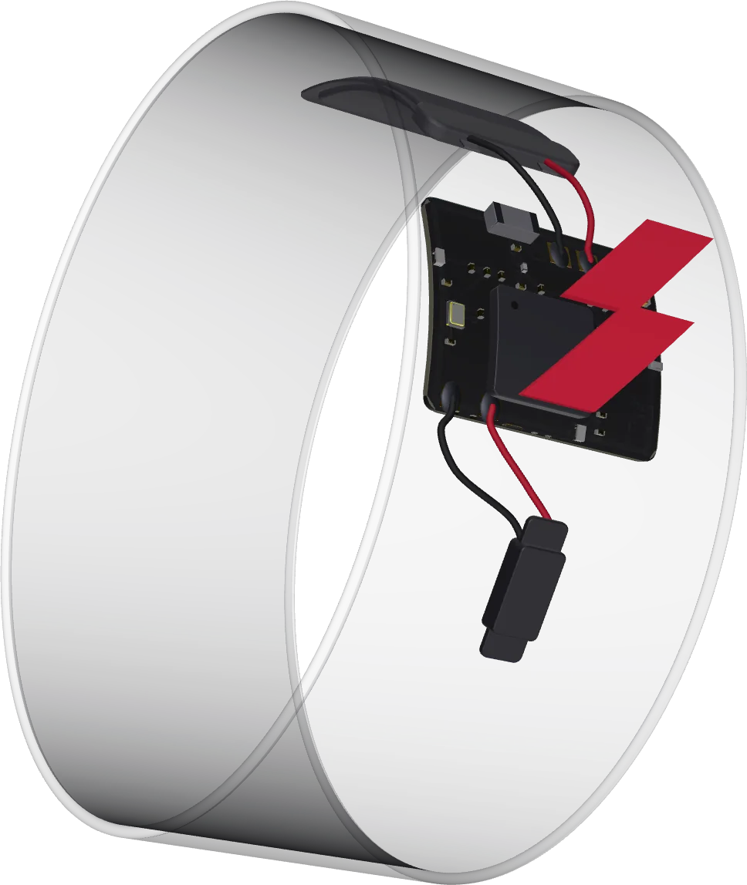

Sofia Viola
CEO
Biochemical Engineering and Business at UCL. Combat sports meets venture strategy. Building the commercial infrastructure.
Precision wearable technology for combat sports athletes and elite gyms.
Application received — we'll be in touch.

Millisecond-precision sensors capture every strike before the human eye can process it. No averaging, no delay.
Punch data streams live to the coach's dashboard. No post-session upload. No sync delay. Instant intelligence.
No calibration ritual. No complex hardware. Wraps go on, data flows instantly. Built to disappear into training.
Impkt Band gives coaches the data layer their gym has always needed. No retrofitting. No friction.
Biochemical Engineering and Business at UCL. Combat sports meets venture strategy. Building the commercial infrastructure.
Hardware and firmware engineer. BEng Mechanical Engineering, Loughborough. Built the entire stack from scratch.
Athletes, coaches and gyms — early access is opening now.
Application received — we'll be in touch.
We reply to every message personally.
hello@impktband.com